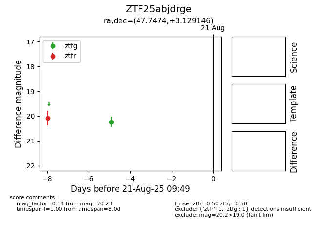

Target ZTF25abjdrge at 2025-08-21 09:49, see:
FINK: fink-portal.org/ZTF25abjdrge
Lasair: lasair-ztf.lsst.ac.uk/objects/ZTF25abjdrge
ALeRCE: alerce.online/object/ZTF25abjdrge
alt names
ZTF25abjdrge (ztf,alerce)
coordinates:
equatorial (ra, dec) = (47.7474,+3.12915)
galactic (l, b) = (176.4677,-44.75315)
photometry
last ztfg=20.23, ztfr=20.07
1 ztfg, 1 ztfr detections
